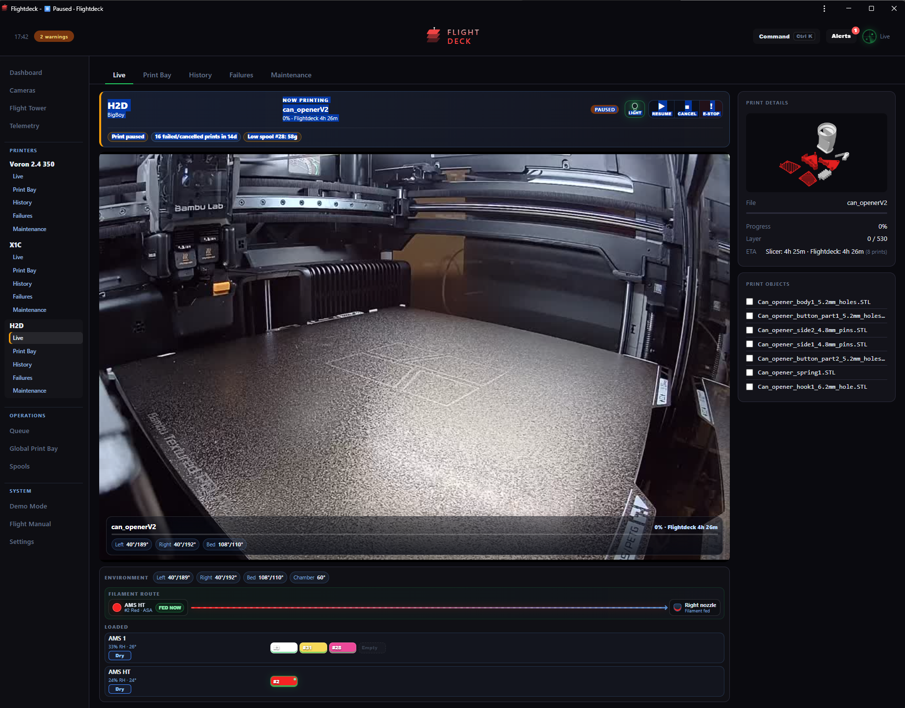
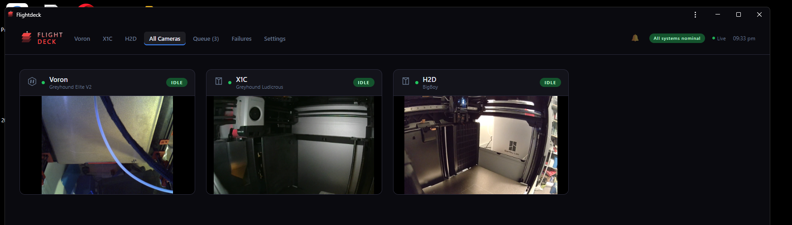
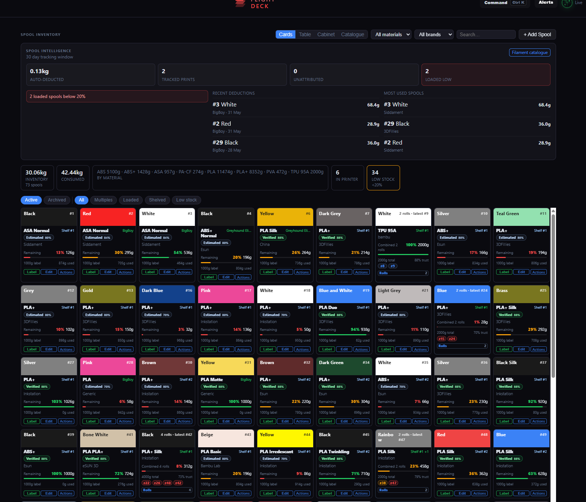

Live control
Watch cameras, see print state, pause/resume/cancel, and keep risky actions behind clear confirmation.

Self-hosted printer ops
A LAN-first control tower for mixed Bambu, Voron, and Klipper 3D printer fleets.
Watch cameras, see print state, pause/resume/cancel, and keep risky actions behind clear confirmation.
Track queued work across printers and surface dispatch advice based on printer state, loaded filament, and stock.
Manage filament by roll, location, AMS slot, label, remaining weight, brand, colour, and confidence.
Browse printer SD cards and a local print vault without bouncing between slicer, printer UI, and file shares.
See fleet health, print hours, failures, AMS humidity, low stock, host load, memory, and camera worker pressure.
Bring printer-specific care items into the same workflow as history, failures, filament, and live controls.
Tested on Bambu and Voron hardware, with testers wanted for Prusa, Qidi, Creality, RatRig, and other ecosystems.
Use Flightdeck from a phone or tablet for camera checks, alerts, queue triage, and spool work away from the desk.
Flightdeck keeps the camera as the hero, then wraps it with the details that matter during a print: current job, action buttons, print objects, temperatures, loaded filament, AMS humidity, and live filament routing.


Flightdeck started from a real bench: a Bambu H2D, a Bambu X1C, and a Voron 2.4. It is built around the way printers are actually used: cameras, queues, filament, failures, maintenance, and quick decisions from the bench or a phone. The goal is not to replace every slicer or printer UI. The goal is to reduce the daily context switching and make the important signals harder to miss.
Flightdeck is moving from private homelab build toward open-source feedback. It is already proven on Bambu and Voron, and now needs testers with other printer ecosystems.
curl -fsSL https://raw.githubusercontent.com/Kidabah/flightdeck/main/scripts/install-pi.sh | bashPi 5 4 GB for small fleets, Pi 5 8 GB as the recommended default, and Pi 5 16 GB for 10+ printers or camera-heavy rooms. Pi 4 can run light installs, but Pi 5 is the main target.
Optional hardware: Dymo USB scale and Brother QL-700 label printer.
Flightdeck ships with Demo Mode, a standalone `/demo` page, and a Flight Manual so a new tester can explore the dashboard, cameras, printer pages, Print Bay, spools, failures, telemetry, and maintenance before touching real printer controls.
Install on a Pi, open `/demo` or Demo Mode, confirm Setup Health, add one printer, then browse read-only screens before testing queue, file, AMS, or hardware actions.
A standalone interactive demo that looks and behaves like Flightdeck without touching real printers.
Clearer first-run setup, printer templates, recovery notes, backup/restore, and safer upgrades.
Better filament matching, failure review, maintenance automation, print vault workflows, and Voron polish.
Try the repo, open an issue, or send feedback. Real printer farms are messy; that is exactly where Flightdeck should get sharper.